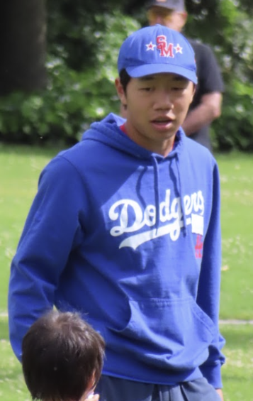

MEET THE FOUNDER
Vincent Hall.
Student-athlete. Coach. Community builder.

MARANATHA HIGH SCHOOL · PASADENAWHY I STARTED
Turning a passion
into a purpose.
Vincent is an infielder and student-athlete at Maranatha High School. During his freshman year, he began helping younger players with hitting and throwing.
He built Future Stars to give players clear feedback, focused drills, and encouragement they can take into their next practice.
01LeadPlan sessions and guide student volunteers.
02CoachDemonstrate skills and work with younger players.
03ReflectReview swings and plan the next steps.
LEADERSHIP IN ACTION